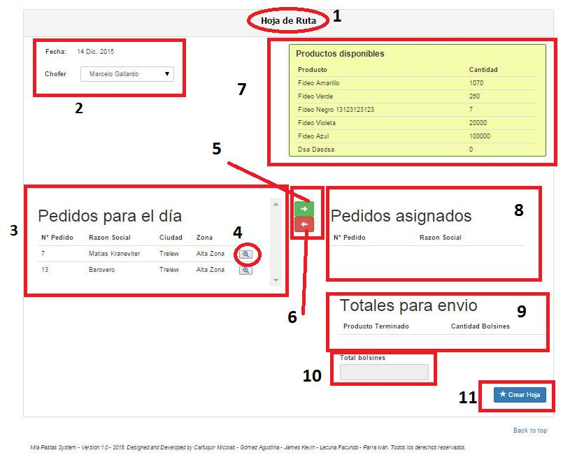
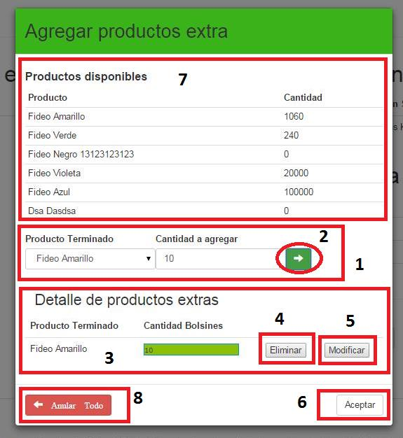
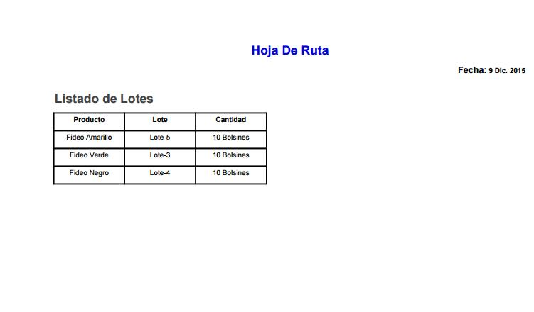

Hoja de Ruta¶
- Nos dice dónde estamos, en este caso, en “Hoja de Ruta”.
- Mostrará la fecha de la hoja de ruta, y deberemos seleccionar el chofer asociado a la misma.
- Listará todos los pedidos que deben ser entregados en el día.
4. Permite consultar los datos del pedido seleccionado. 5 y 6. Permitirán asignar y desasignar, respectivamente, pedidos a la hoja de ruta. 7. Cantidad de cada Producto Terminado disponible. 8. Pedidos que han sido asignados a la Hoja de Ruta. 9. Totales a enviar de cada producto terminado. 10. Total de bolsines a enviar. 11. Permite agregar productos extras y generar la Hoja de Ruta.
Asignar Productos Extras y Generar Hoja De Ruta¶
En (1) deberemos seleccionar el producto terminado y la cantidad a llevar como extras. El botón (2) permite asignar dicho producto y cantidad en la hoja de ruta. En (3) vemos todos los pedidos asignados a la hoja de ruta. El botón (4) permite eliminar un producto extra de la hoja de ruta, mientras que el (5) permite modificar la cantidad del producto extra a llevar. En (7) vemos los productos y sus respectivas cantidades que se puede agregar como extras. El botón (6) permitirá guardar todos los datos y da de alta la hoja de ruta. El botón (8) sirve para cancelar todo y volver a la pantalla principal del sistema.
Previsualizar Hoja de Ruta¶

En (1) vemos la fecha de generación de la Hoja de Ruta. En (2) vemos el número de hoja de ruta y el chofer asignado. En (3) vemos todos los pedidos asignados a la hoja de ruta, mostrando para cada uno: el número de pedido, el nombre del cliente, la dirección, y un listado de todos los productos a llevar. Si presionamos el botón (4) se generará un archivo PDF que contendrá todos los datos de la hoja de ruta necesarios para que el chofer haga el reparto:
Hoja a PDF¶

En (5) se mostrarán todos los productos terminados asignados a la hoja de ruta, junto a los lotes de donde se sacaron dichos productos. Si presionamos el botón (6), se generará otro archivo PDF que contendrá los datos anteriormente mencionados:
